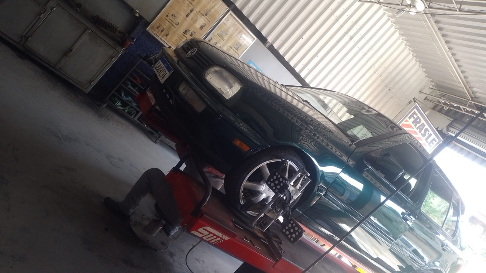

Completo e funcional
Ar-condicionado, direção hidráulica, travas originais a vácuo, vidros elétricos nas quatro portas, retrovisores elétricos, faróis de milha, sensor de estacionamento e som Pioneer com Bluetooth.
Vendido em 05/08/2026 — uma história que ficou marcada
Este exemplar deixou de ser anunciado para virar memória. A página segue no ar como um registro nostálgico de um MK3 bem cuidado, com presença forte nos anos 90 e um histórico que merece ser lembrado.
Memória e presente
Este carro foi vendido em 05/08/2026, mas a sua presença merece ser preservada. Aqui fica a lembrança de um exemplar que reuniu cuidado, originalidade e aquele charme raro dos anos 90.
Vídeo de destaque
Pontos de compra
Ar-condicionado, direção hidráulica, travas originais a vácuo, vidros elétricos nas quatro portas, retrovisores elétricos, faróis de milha, sensor de estacionamento e som Pioneer com Bluetooth.
Pintura verde impecável, sem detalhes, com brilho de espelho. O conjunto visual é fechado por rodas Volcano aro 17 em estado de novas, com pneus 195/40 R17.
Suspensão nova, suportes trocados, injeção revisada e escapamento completo novo. Não é o típico anúncio que empurra manutenção pesada para o pós-compra.
Galeria premium
RPM
Ficha técnica e história
Esse Golf entrega exatamente o que um entusiasta espera de um hatch alemão dos anos 90: direção comunicativa, ergonomia simples, construção sólida e uma sensação de carro inteiro que ficou cada vez mais rara. A diferença aqui é que ele não vive de promessa estética. O discurso é sustentado por revisão, funcionamento e contexto de uso seletivo.
Foi usado aos finais de semana, frequentou encontros da cena MK3 e recebeu investimento consistente para preservar prazer de dirigir e confiabilidade. O resultado é um carro com postura, história e mecânica preparada para uso real, inclusive em viagens longas.
Equipamentos e revisão
Carro super íntegro, com proposta de compra sustentada por revisão, funcionamento e apresentação.
Mesmo com o ciclo encerrado, o carro segue representando um exemplo raro de cuidado e originalidade.
.jpeg)


Registro público
Memória e fechamento
Este carro foi vendido em 05/08/2026. A página permanece online como um registro nostálgico para quem admirou, viu ou sonhou com um Golf MK3 bem cuidado.